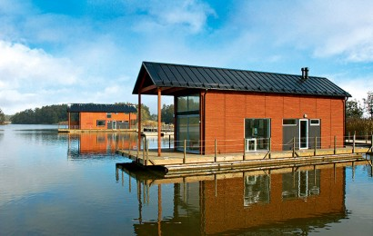
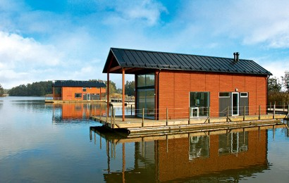

Floating Houses are unique solutions for year-round living, as a workplace or for a second home. Living in a floating home is a stylish life choice and if you love the sea, you will love the floating house. Marina Housing, formed by Marinetek in 2007, offers houses featuring different architecture, from traditional Scandinavian styles to modern urban looks. Houses are always customised and are manufactured as prefabricated modules under controlled factory conditions. The house modules are shipped to the site, lifted onto the pontoon platform, towed to final position, moored and connected to the municipal water, electricity and sewage network. Floating houses benefit from solar and heat pump technology. Construction is environmentally bullet proof, with no negative impact on the seabed or marine life. Marinetek’s Intelligent Floating Platform lasts for more than 50 years and is maintenance-free.

 
